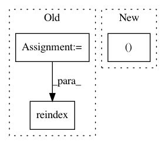

9da4e51da0044cfbdcf3a667187d86f0c35ece8e,slm_lab/experiment/analysis.py,,analyze_experiment,#Any#,301
Before Change
@returns {DataFrame} experiment_df Of var_specs, metrics for all trials.
"""
experiment_df = pd.DataFrame(experiment.trial_data_dict).transpose()
cols = METRICS_COLS
config_cols = sorted(ps.difference(experiment_df.columns.tolist(), cols))
sorted_cols = config_cols + cols
experiment_df = experiment_df.reindex(sorted_cols, axis=1)
experiment_df.sort_values(by=["strength"], ascending=False, inplace=True)
logger.info(f"Experiment data:\n{experiment_df}")
experiment_fig = plot_experiment(experiment.spec, experiment_df)
save_experiment_data(experiment.spec, experiment_df, experiment_fig)
After Change
viz.plot_experiment(experiment.spec, experiment_df, METRICS_COLS)
logger.debug(f"Saved experiment data to {prepath}")
// zip files
predir, _, _, _, _, _ = util.prepath_split(prepath)
shutil.make_archive(predir, "zip", predir)
logger.info(f"All experiment data zipped to {predir}.zip")
return experiment_df
In pattern: SUPERPATTERN
Frequency: 3
Non-data size: 3
Instances
Project Name: kengz/SLM-Lab
Commit Name: 9da4e51da0044cfbdcf3a667187d86f0c35ece8e
Time: 2019-05-25
Author: kengzwl@gmail.com
File Name: slm_lab/experiment/analysis.py
Class Name:
Method Name: analyze_experiment
Project Name: nilmtk/nilmtk
Commit Name: 68d56b30e50858751d9248332d20be844031fff0
Time: 2014-12-12
Author: jack-list@xlk.org.uk
File Name: nilmtk/metergroup.py
Class Name:
Method Name: combine_chunks_from_generators
Project Name: etal/cnvkit
Commit Name: 98f615864e32057dd5b0bf80506e54857ba2a869
Time: 2016-09-12
Author: eric.talevich@gmail.com
File Name: cnvlib/tabio/seg.py
Class Name:
Method Name: parse_seg